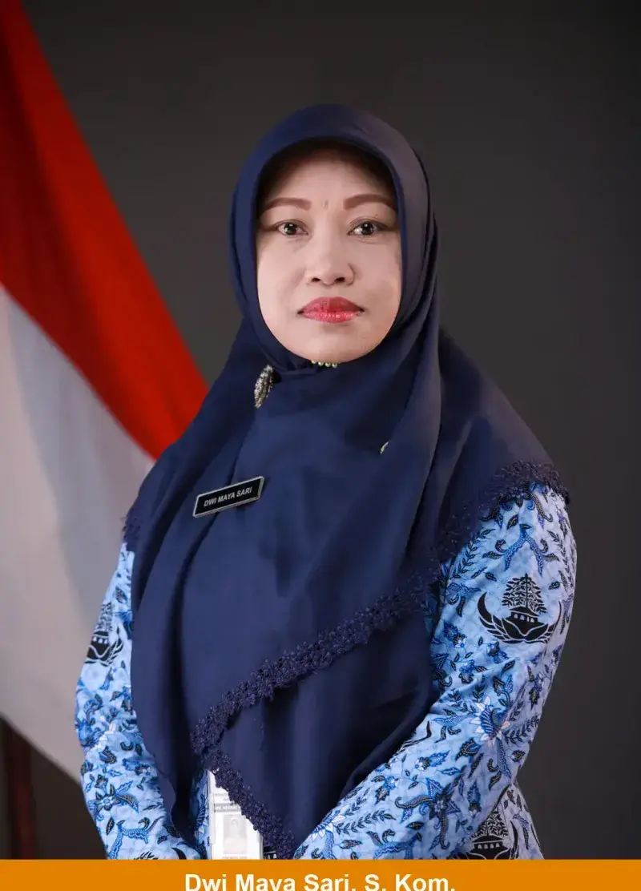
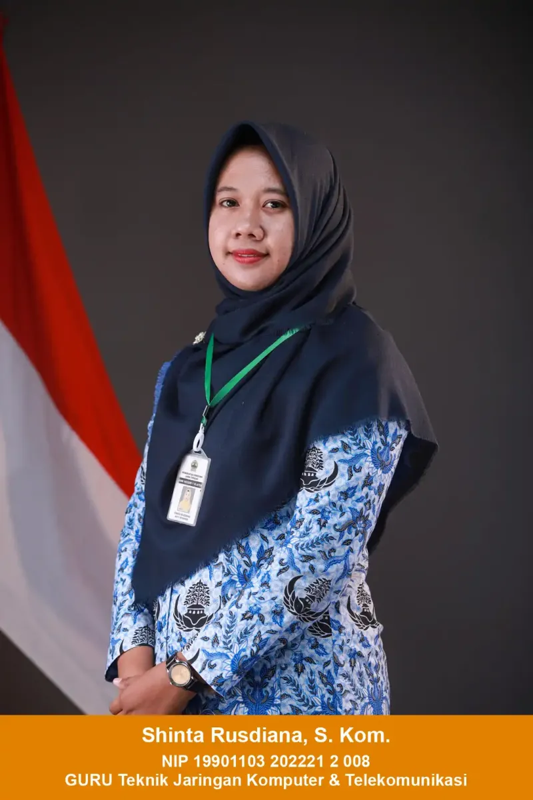
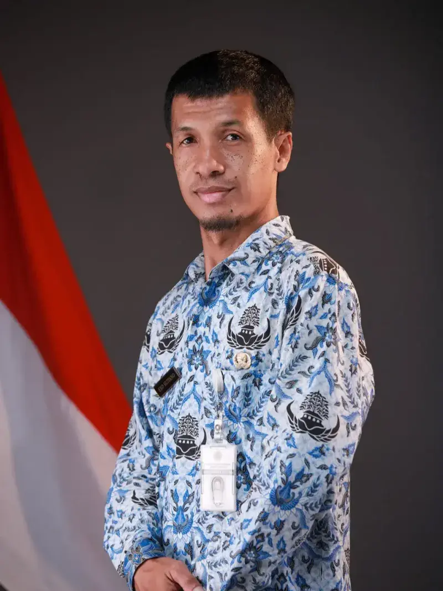

Kenali guru-guru yang mendampingi XII TJKT 2 selama menjalani kegiatan di sekolah. Setiap guru memiliki peran dalam memberikan ilmu, arahan, dan pengalaman bagi kami. Bimbingan mereka menjadi bagian penting dalam perjalanan kami selama belajar.

Guru Mata Pelajaran Pilihan (RPL)
Wali Kelas XII TJKT 2Mata Pelajaran Konsentrasi Keahlian

Mata Pelajaran Konsentrasi Keahlian
Mata Pelajaran Konsentrasi Keahlian

KIK (Kreatifitas, Inovasi dan Kewirausahaan)
Bahasa Inggris
Bahasa Indonesia
Pendidikan Agama Islam
Bahasa Jawa
Pendidikan Pancasila
Matematika
Bimbingan Konseling (BK)